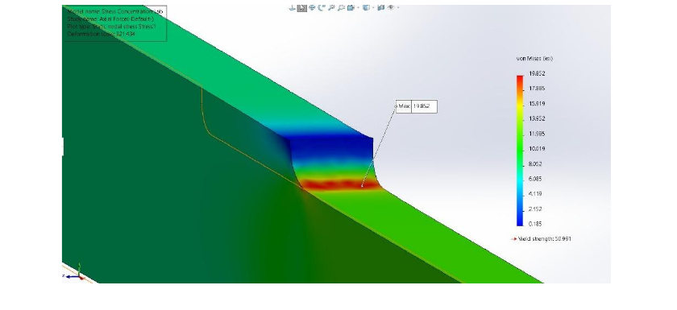
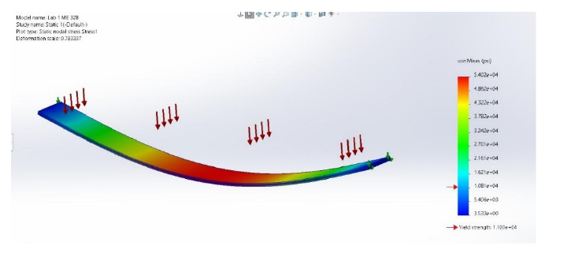
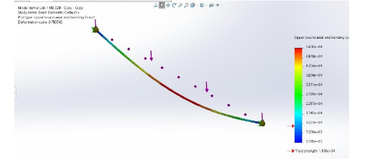
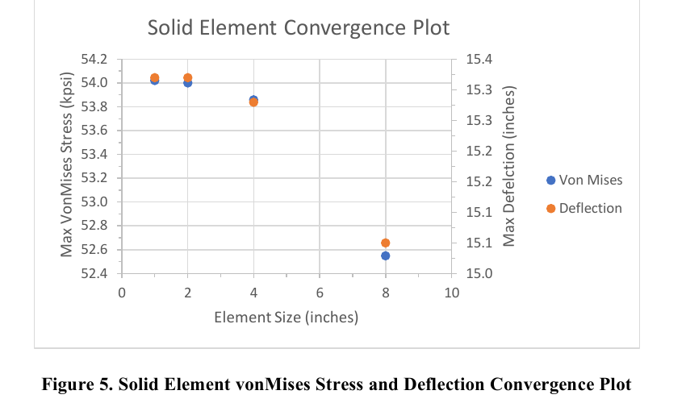
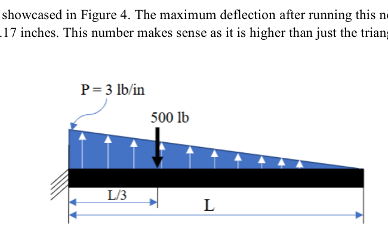
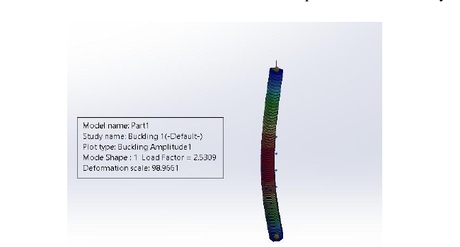
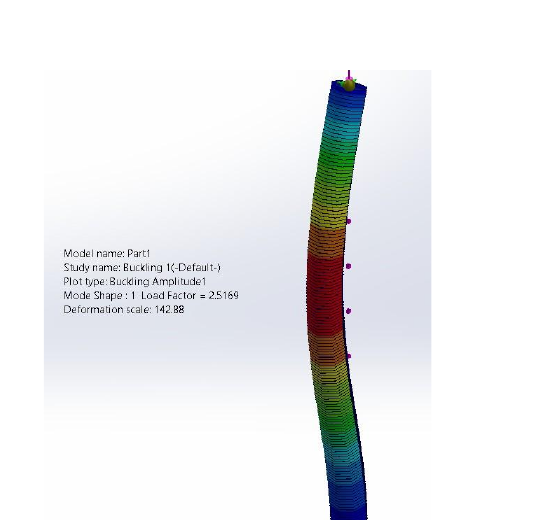

Finite Element Analysis Studies
SolidWorks Simulation | ME 328 | Cal Poly San Luis Obispo

Finite element analysis is useful only when the model represents the real structure and its results can be defended. Across four studies, I built and validated SolidWorks Simulation models, compared element and boundary-condition choices, and used the verified results to evaluate stiffness, stress, weight, cost, and stability.
Model validation and convergence
Simply supported aluminum beam
I began with a simply supported beam under uniform pressure. Analytical beam equations predicted a maximum bending stress of 54 kpsi and a maximum deflection of 15.3 in. I modeled the same beam with solid, shell, and beam elements while changing the fixtures and mesh size.
Fully fixing the end faces made the model artificially stiff. Replacing those fixtures with edge constraints allowed the ends to rotate like pin and roller supports. With the corrected boundary conditions, mesh refinement brought the solid-element result to 54.02 kpsi and 15.32 in - closely matching the analytical solution.



Wing-spar optimization
Geometry, material, weight, and cost trade study
I evaluated a conceptual 70 ft cantilever wing spar under a triangular lift distribution and a 500 lbf engine point load. I compared I-beam and hollow box sections in 7075-T6 aluminum and normalized AISI 4130 steel, iterating each geometry until tip deflection fell within the 9-10 in target range.

| Cross section | Material | Deflection | Max stress | Weight | Est. cost |
|---|---|---|---|---|---|
| I-beam | 7075-T6 Al | 9.780 in | 4,760 psi | 1,969 lb | $13,783 |
| I-beam | AISI 4130 steel | 9.544 in | 13,325 psi | 2,596 lb | $25,960 |
| Box beam | 7075-T6 Al | 9.378 in | 3,259 psi | 1,705 lb | $11,935 |
| Box beam | AISI 4130 steel | 9.300 in | 6,694 psi | 3,335 lb | $33,350 |
Stress concentrations
Fillet-radius sensitivity under axial and bending loads
A stepped bar showed how geometric discontinuities amplify local stress. The highest von Mises stress formed at the fillet where the cross section changed. I swept the fillet radius from 0.2 to 16 in and compared the response under axial and bending loads.
Increasing the radius reduced peak stress from 19.85 to 12.80 kpsi for the reported axial cases and from 29.56 to 20.24 kpsi for bending. Both curves approached a plateau, revealing diminishing structural benefit as the fillet became larger.
Buckling and support conditions
Safety-factor-driven column sizing
I used Euler buckling theory to establish initial dimensions for 6.5 ft balsa-wood columns, then refined each model with a SolidWorks eigenvalue buckling study. Four cases combined pinned-pinned and fixed-pinned supports with 22,500 and 45,000 lbf compressive loads.
Every configuration was iterated into the required 2.5-2.6 safety-factor range. The fixed-pinned cases required smaller cross sections because the rotational restraint increased column stiffness. Doubling the load increased the required side length by roughly one inch because the square section's area moment of inertia scales with the fourth power of its side length.
| Boundary condition | Applied load | Final side length | Safety factor |
|---|---|---|---|
| Pinned-pinned | 22,500 lbf | 5.67 in | 2.50 |
| Fixed-pinned | 22,500 lbf | 4.75 in | 2.51 |
| Pinned-pinned | 45,000 lbf | 6.75 in | 2.52 |
| Fixed-pinned | 45,000 lbf | 5.70 in | 2.52 |


What I learned
Engineering judgment before solver output
These studies reinforced that FEA is not a substitute for engineering judgment. A solver will return a result even when fixtures, element types, or mesh choices do not represent the physical problem. By pairing simulation with analytical estimates, convergence checks, and design iteration, I learned to separate visually plausible output from a result that can be defended and used for a design decision.